What clustering ~5,000 songs actually taught us — three algorithms, real failures, and one surprising correction.
Full coverage. Playlist size fully controllable.
Size target imposed by us, not discovered.
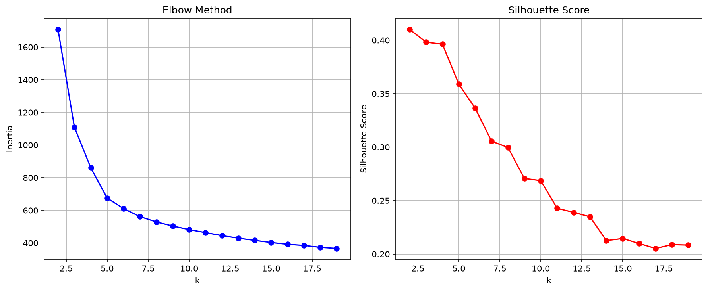
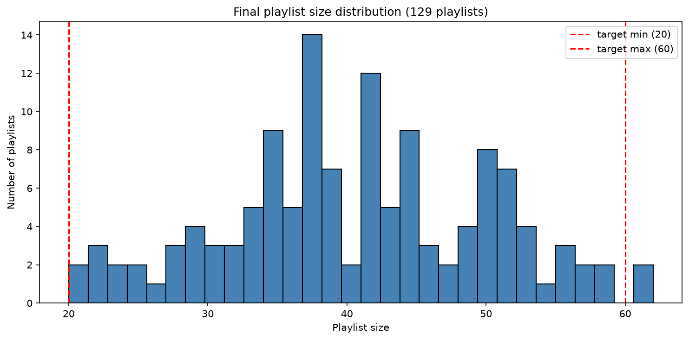
Strong diagnostic tool. Honest about what it doesn't know.
Not viable as the primary playlist generator for this data.
Reveals real coarse structure. Strong hybrid potential with K-Means.
Heavier to compute. Still needs a human-chosen cutoff.
| Method | Coherence | Coverage | Verdict |
|---|---|---|---|
| K-Means | Good (business-tuned) | ~98% | Chosen — business-constrained, reliable |
| DBSCAN | Diagnostic only | up to 92%* | *hides one mega-cluster — not real playlists |
| Hierarchical | Good at k=8 | 100% | Confirms K-Means findings independently |
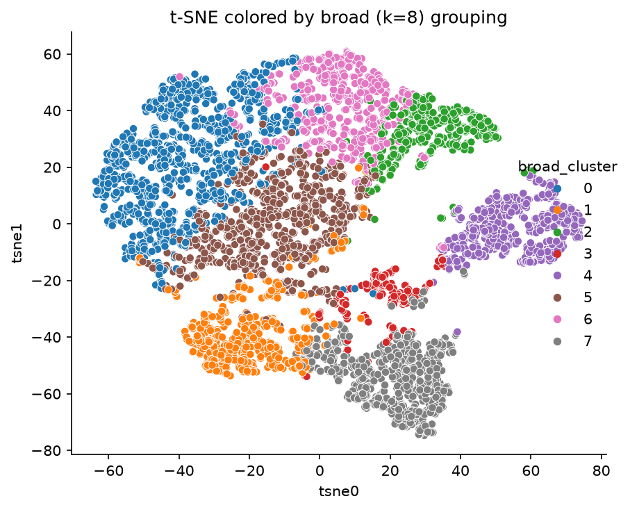
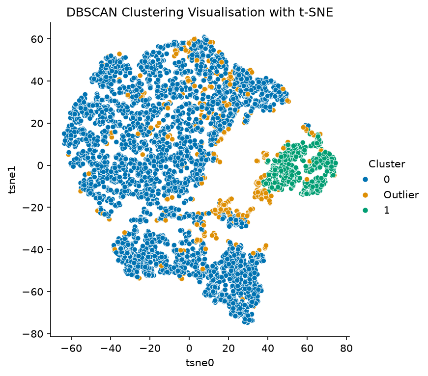
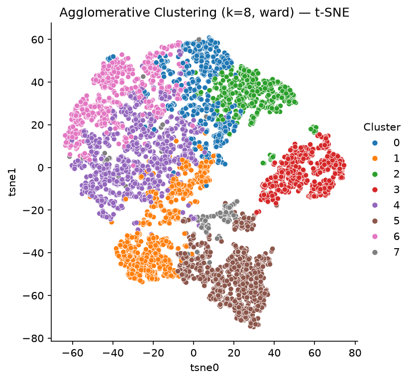
Same underlying shape, three different lenses — the next slide puts a real number on it.
| Comparison | ARI | NMI |
|---|---|---|
| K-Means vs Agglomerative | 0.555 | 0.689 |
| K-Means vs DBSCAN | 0.089 | 0.306 |
| Agglomerative vs DBSCAN | 0.084 | 0.302 |
On the one distinction DBSCAN did commit to — classical vs. everything else — agreement is perfect: ARI = 1.000
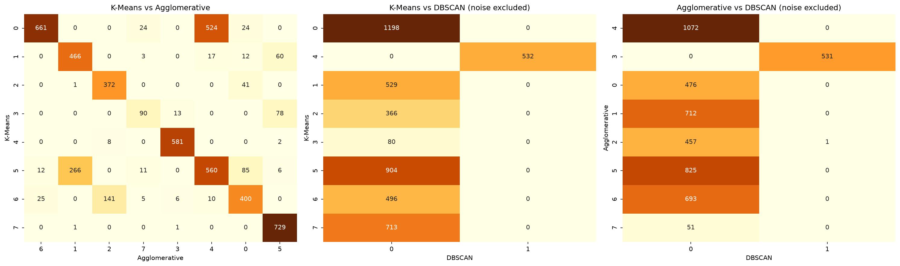
Then we checked one "worst offender" playlist by ear — it was a completely coherent jazz & bossa nova set the single-stage pipeline got right. The hybrid would have split it apart.
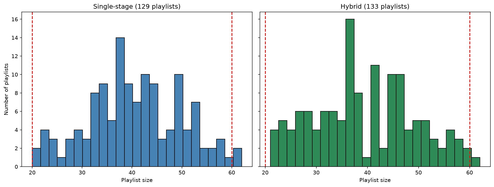
Landed in a dance-pop playlist — matched on tempo and energy alone. The algorithm has no way to hear that it's a different genre entirely.
Flagged as "badly mixed" for spanning four categories. Checking the actual titles: Jobim, jazz standards — a completely coherent playlist, just sonically diverse.
These features track sound, not genre or mood the way people actually experience it.
Is unsupervised machine learning the right approach? Yes — but only paired with an explicit, human-defined goal.
No algorithm has a concept of "good" on its own. Every useful result in this project came from combining the math with a clear decision about what we actually wanted.
Ship K-Means with business-defined playlist sizes — but keep a human in the loop, always.
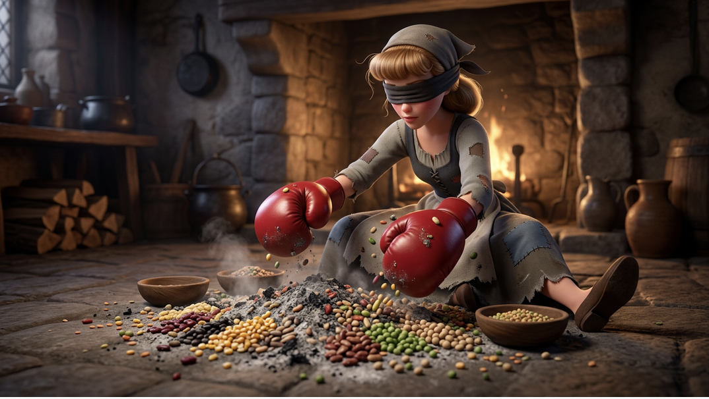
Every algorithm we tested sorted honestly, by whatever it could feel. The features it had access to — and the ones it didn't — decided the rest.
Thank you — happy to take questions.
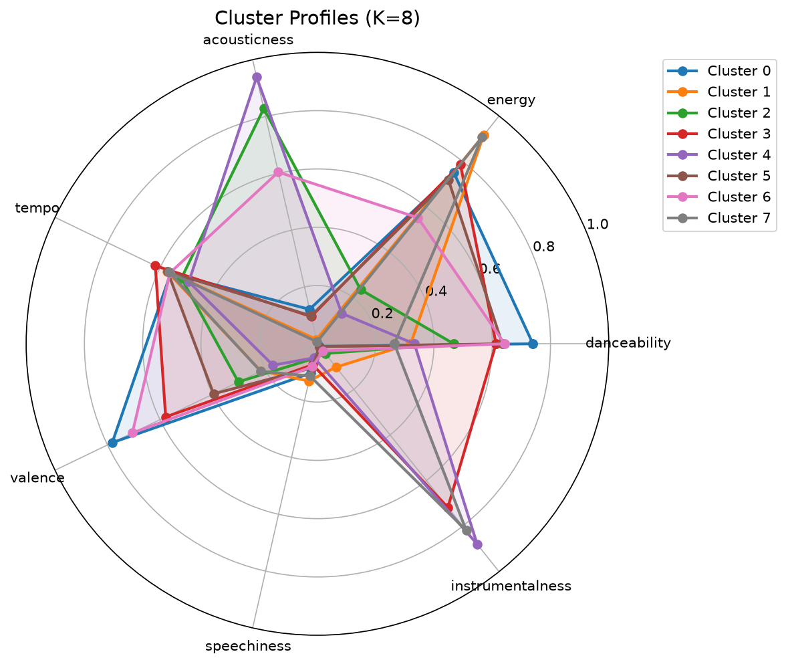
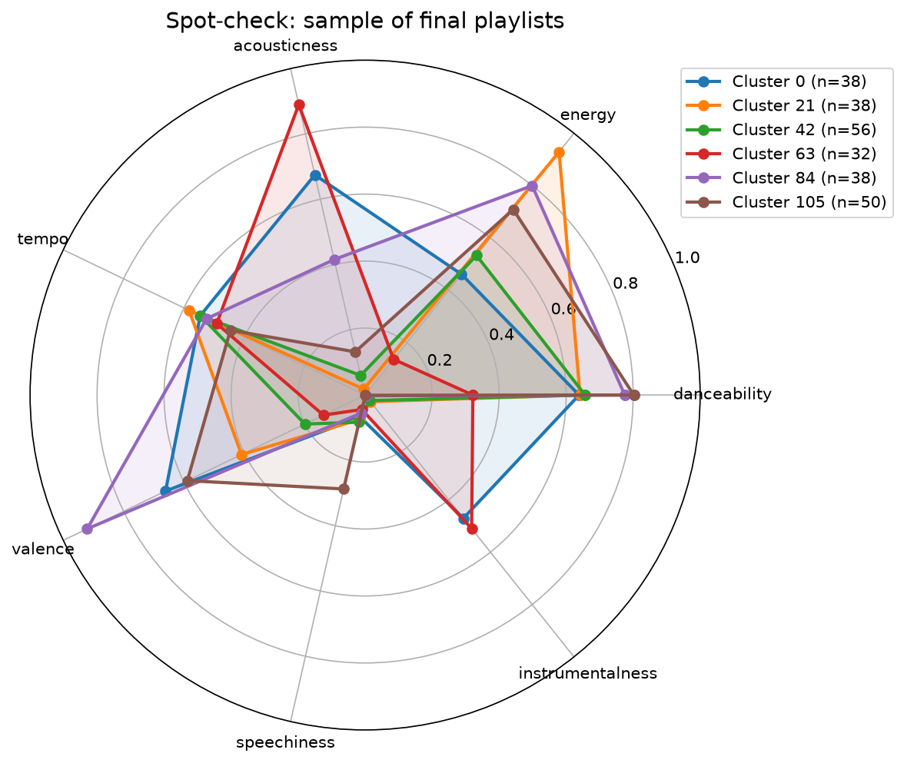
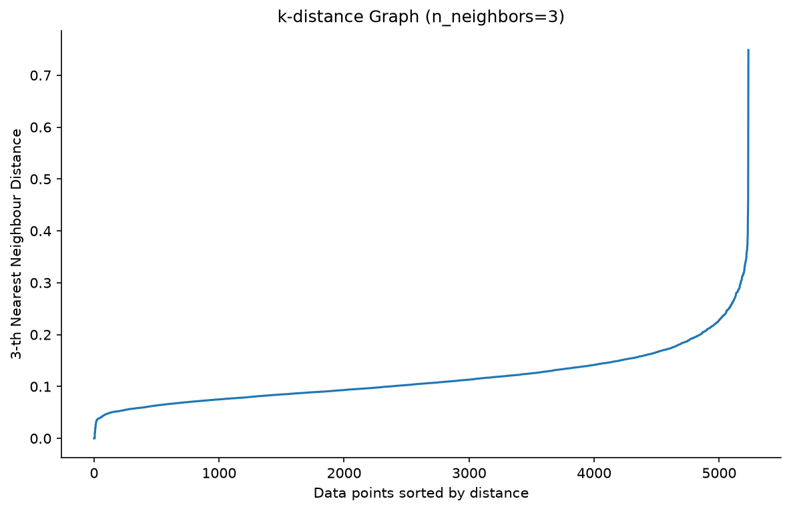
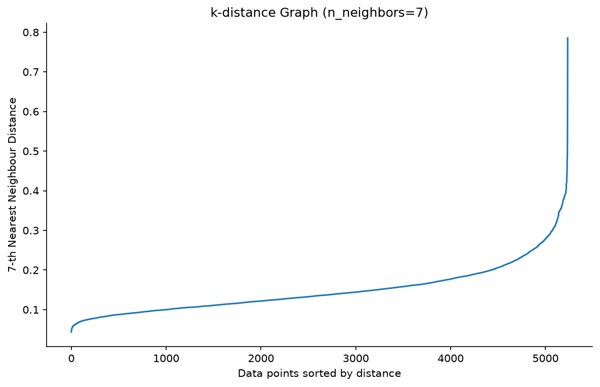
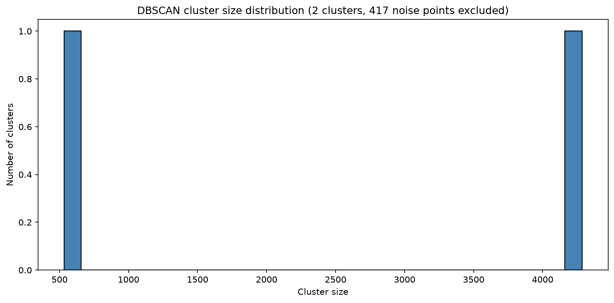
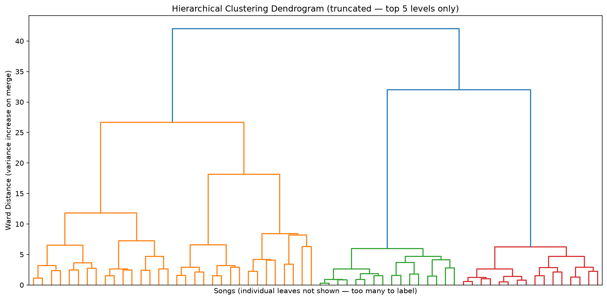
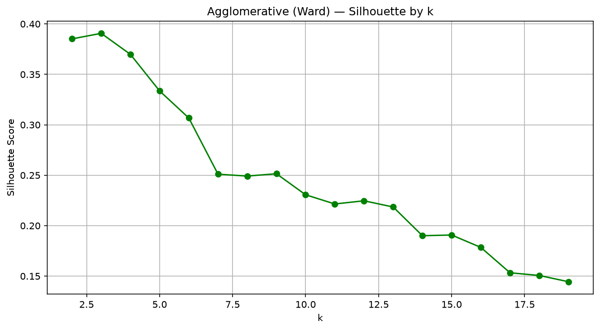
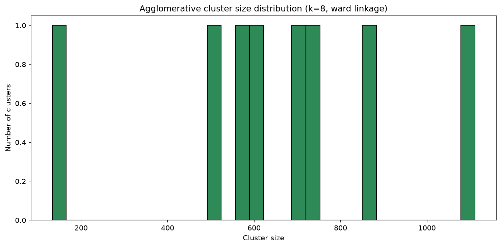